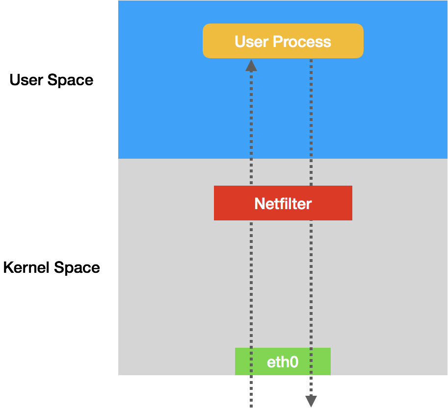

# 为什么说 Kubernetes 只有 soft multi-tenancy
在前面的文章中，我为你详细讲解了 Kubernetes 生态里，主流容器网络方案的工作原理。
不难发现，Kubernetes 的网络模型，以及前面这些网络方案的实现，都只关注容器之间网络的 “连通”，却并不关心容器之间网络的 “隔离”。这跟传统的 IaaS 层的网络方案，区别非常明显。
你肯定会问了，Kubernetes 的网络方案对 “隔离” 到底是如何考虑的呢？难道 Kubernetes 就不管网络 “多租户” 的需求吗？
接下来，在今天这篇文章中，我就来回答你的这些问题。
在 Kubernetes 里，网络隔离能力的定义，是依靠一种专门的 API 对象来描述的，即：NetworkPolicy。
一个完整的 NetworkPolicy 对象的示例 ，如下所示：
apiVersion: networking.k8s.io/v1
kind: NetworkPolicy
metadata:
name: test-network-policy
namespace: default
spec:
podSelector:
matchLabels:
role: db
policyTypes:
- Ingress
- Egress
ingress:
- from:
- ipBlock:
cidr: 172.17.0.0/16
except:
- 172.17.1.0/24
- namespaceSelector:
matchLabels:
project: myproject
- podSelector:
matchLabels:
role: frontend
ports:
- protocol: TCP
port: 6379
egress:
- to:
- ipBlock:
cidr: 10.0.0.0/24
ports:
- protocol: TCP
port: 5978
我在和你分享前面的内容时已经说过（这里你可以再回顾下第 34 篇文章《Kubernetes 网络模型与 CNI 网络插件》中的相关内容），Kubernetes 里的 Pod 默认都是 “允许所有”（Accept All）的，即：Pod 可以接收来自任何发送方的请求；或者，向任何接收方发送请求。而如果你要对这个情况作出限制，就必须通过 NetworkPolicy 对象来指定。
而在上面这个例子里，你首先会看到 podSelector 字段。它的作用，就是定义这个 NetworkPolicy 的限制范围，比如：当前 Namespace 里携带了 role=db 标签的 Pod。
而如果你把 podSelector 字段留空：
spec:
podSelector: {}
那么这个 NetworkPolicy 就会作用于当前 Namespace 下的所有 Pod。
而一旦 Pod 被 NetworkPolicy 选中，那么这个 Pod 就会进入 “拒绝所有”（Deny All）的状态，即：这个 Pod 既不允许被外界访问，也不允许对外界发起访问。
而 NetworkPolicy 定义的规则，其实就是 “白名单”。
例如，在我们上面这个例子里，我在 policyTypes 字段，定义了这个 NetworkPolicy 的类型是 ingress 和 egress，即：它既会影响流入（ingress）请求，也会影响流出（egress）请求。
然后，在 ingress 字段里，我定义了 from 和 ports，即：允许流入的 “白名单” 和端口。其中，这个允许流入的 “白名单” 里，我指定了 ** 三种并列的情况，** 分别是：ipBlock、namespaceSelector 和 podSelector。
而在 egress 字段里，我则定义了 to 和 ports，即：允许流出的 “白名单” 和端口。这里允许流出的 “白名单” 的定义方法与 ingress 类似。只不过，这一次 ipblock 字段指定的，是目的地址的网段。
综上所述，这个 NetworkPolicy 对象，指定的隔离规则如下所示：
- 该隔离规则只对 default Namespace 下的，携带了 role=db 标签的 Pod 有效。限制的请求类型包括 ingress（流入）和 egress（流出）。
- Kubernetes 会拒绝任何访问被隔离 Pod 的请求，除非这个请求来自于以下 “白名单” 里的对象，并且访问的是被隔离 Pod 的 6379 端口。这些 “白名单” 对象包括：
a. default Namespace 里的，携带了 role=fronted 标签的 Pod；
b. 携带了 project=myproject 标签的 Namespace 里的任何 Pod；
c. 任何源地址属于 172.17.0.0/16 网段，且不属于 172.17.1.0/24 网段的请求。 - Kubernetes 会拒绝被隔离 Pod 对外发起任何请求，除非请求的目的地址属于 10.0.0.0/24 网段，并且访问的是该网段地址的 5978 端口。
需要注意的是，定义一个 NetworkPolicy 对象的过程，容易犯错的是 “白名单” 部分（from 和 to 字段）。
举个例子：
...
ingress:
- from:
- namespaceSelector:
matchLabels:
user: alice
- podSelector:
matchLabels:
role: client
...
像上面这样定义的 namespaceSelector 和 podSelector，是 “或”（OR）的关系。所以说，这个 from 字段定义了两种情况，无论是 Namespace 满足条件，还是 Pod 满足条件，这个 NetworkPolicy 都会生效。
而下面这个例子，虽然看起来类似，但是它定义的规则却完全不同：
...
ingress:
- from:
- namespaceSelector:
matchLabels:
user: alice
podSelector:
matchLabels:
role: client
...
注意看，这样定义的 namespaceSelector 和 podSelector，其实是 “与”（AND）的关系。所以说，这个 from 字段只定义了一种情况，只有 Namespace 和 Pod 同时满足条件，这个 NetworkPolicy 才会生效。
这两种定义方式的区别，请你一定要分清楚。
此外，如果要使上面定义的 NetworkPolicy 在 Kubernetes 集群里真正产生作用，你的 CNI 网络插件就必须是支持 Kubernetes 的 NetworkPolicy 的。
在具体实现上，凡是支持 NetworkPolicy 的 CNI 网络插件，都维护着一个 NetworkPolicy Controller，通过控制循环的方式对 NetworkPolicy 对象的增删改查做出响应，然后在宿主机上完成 iptables 规则的配置工作。
在 Kubernetes 生态里，目前已经实现了 NetworkPolicy 的网络插件包括 Calico、Weave 和 kube-router 等多个项目，但是并不包括 Flannel 项目。
所以说，如果想要在使用 Flannel 的同时还使用 NetworkPolicy 的话，你就需要再额外安装一个网络插件，比如 Calico 项目，来负责执行 NetworkPolicy。
安装 Flannel + Calico 的流程非常简单，你直接参考这个文档一键安装即可。
那么，这些网络插件，又是如何根据 NetworkPolicy 对 Pod 进行隔离的呢？
接下来，我就以三层网络插件为例（比如 Calico 和 kube-router），来为你分析一下这部分的原理。
为了方便讲解，这一次我编写了一个比较简单的 NetworkPolicy 对象，如下所示：
apiVersion: extensions/v1beta1
kind: NetworkPolicy
metadata:
name: test-network-policy
namespace: default
spec:
podSelector:
matchLabels:
role: db
ingress:
- from:
- namespaceSelector:
matchLabels:
project: myproject
- podSelector:
matchLabels:
role: frontend
ports:
- protocol: tcp
port: 6379
可以看到，我们指定的 ingress “白名单”，是任何 Namespace 里，携带 project=myproject 标签的 Pod；以及 default Namespace 里，携带了 role=frontend 标签的 Pod。允许被访问的端口是：6379。
而被隔离的对象，是所有携带了 role=db 标签的 Pod。
那么这个时候，Kubernetes 的网络插件就会使用这个 NetworkPolicy 的定义，在宿主机上生成 iptables 规则。这个过程，我可以通过如下所示的一段 Go 语言风格的伪代码来为你描述：
for dstIP := range 所有被networkpolicy.spec.podSelector选中的Pod的IP地址
for srcIP := range 所有被ingress.from.podSelector选中的Pod的IP地址
for port, protocol := range ingress.ports {
iptables -A KUBE-NWPLCY-CHAIN -s $srcIP -d $dstIP -p $protocol -m $protocol --dport $port -j ACCEPT
}
}
}
可以看到，这是一条最基本的、通过匹配条件决定下一步动作的 iptables 规则。
这条规则的名字是 KUBE-NWPLCY-CHAIN，含义是：当 IP 包的源地址是 srcIP、目的地址是 dstIP、协议是 protocol、目的端口是 port 的时候，就允许它通过（ACCEPT）。
而正如这段伪代码所示，匹配这条规则所需的这四个参数，都是从 NetworkPolicy 对象里读取出来的。
可以看到，Kubernetes 网络插件对 Pod 进行隔离，其实是靠在宿主机上生成 NetworkPolicy 对应的 iptable 规则来实现的。
此外，在设置好上述 “隔离” 规则之后，网络插件还需要想办法，将所有对被隔离 Pod 的访问请求，都转发到上述 KUBE-NWPLCY-CHAIN 规则上去进行匹配。并且，如果匹配不通过，这个请求应该被 “拒绝”。
在 CNI 网络插件中，上述需求可以通过设置两组 iptables 规则来实现。
** 第一组规则，负责 “拦截” 对被隔离 Pod 的访问请求。** 生成这一组规则的伪代码，如下所示：
for pod := range 该Node上的所有Pod {
if pod是networkpolicy.spec.podSelector选中的 {
iptables -A FORWARD -d $podIP -m physdev --physdev-is-bridged -j KUBE-POD-SPECIFIC-FW-CHAIN
iptables -A FORWARD -d $podIP -j KUBE-POD-SPECIFIC-FW-CHAIN
...
}
}
可以看到，这里的的 iptables 规则使用到了内置链：FORWARD。它是什么意思呢？
说到这里，我就得为你稍微普及一下 iptables 的知识了。
实际上，iptables 只是一个操作 Linux 内核 Netfilter 子系统的 “界面”。顾名思义，Netfilter 子系统的作用，就是 Linux 内核里挡在 “网卡” 和 “用户态进程” 之间的一道 “防火墙”。它们的关系，可以用如下的示意图来表示：

可以看到，这幅示意图中，IP 包 “一进一出” 的两条路径上，有几个关键的 “检查点”，它们正是 Netfilter 设置 “防火墙” 的地方。** 在 iptables 中，这些 “检查点” 被称为：链（Chain）。** 这是因为这些 “检查点” 对应的 iptables 规则，是按照定义顺序依次进行匹配的。这些 “检查点” 的具体工作原理，可以用如下所示的示意图进行描述：
可以看到，当一个 IP 包通过网卡进入主机之后，它就进入了 Netfilter 定义的流入路径（Input Path）里。
在这个路径中，IP 包要经过路由表路由来决定下一步的去向。而在这次路由之前，Netfilter 设置了一个名叫 PREROUTING 的 “检查点”。在 Linux 内核的实现里，所谓 “检查点” 实际上就是内核网络协议栈代码里的 Hook（比如，在执行路由判断的代码之前，内核会先调用 PREROUTING 的 Hook）。
而在经过路由之后，IP 包的去向就分为了两种：
- 第一种，继续在本机处理；
- 第二种，被转发到其他目的地。
** 我们先说一下 IP 包的第一种去向。** 这时候，IP 包将继续向上层协议栈流动。在它进入传输层之前，Netfilter 会设置一个名叫 INPUT 的 “检查点”。到这里，IP 包流入路径（Input Path）结束。
接下来，这个 IP 包通过传输层进入用户空间，交给用户进程处理。而处理完成后，用户进程会通过本机发出返回的 IP 包。这时候，这个 IP 包就进入了流出路径（Output Path）。
此时，IP 包首先还是会经过主机的路由表进行路由。路由结束后，Netfilter 就会设置一个名叫 OUTPUT 的 “检查点”。然后，在 OUTPUT 之后，再设置一个名叫 POSTROUTING “检查点”。
你可能会觉得奇怪，为什么在流出路径结束后，Netfilter 会连着设置两个 “检查点” 呢？
这就要说到在流入路径里，路由判断后的第二种去向了。
在这种情况下，这个 IP 包不会进入传输层，而是会继续在网络层流动，从而进入到转发路径（Forward Path）。在转发路径中，Netfilter 会设置一个名叫 FORWARD 的 “检查点”。
而在 FORWARD “检查点” 完成后，IP 包就会来到流出路径。而转发的 IP 包由于目的地已经确定，它就不会再经过路由，也自然不会经过 OUTPUT，而是会直接来到 POSTROUTING “检查点”。
所以说，POSTROUTING 的作用，其实就是上述两条路径，最终汇聚在一起的 “最终检查点”。
需要注意的是，在有网桥参与的情况下，上述 Netfilter 设置 “检查点” 的流程，实际上也会出现在链路层（二层），并且会跟我在上面讲述的网络层（三层）的流程有交互。
这些链路层的 “检查点” 对应的操作界面叫作 ebtables。所以，准确地说，数据包在 Linux Netfilter 子系统里完整的流动过程，其实应该如下所示（这是一幅来自 Netfilter 官方的原理图，建议你点击图片以查看大图）：
可以看到，我前面为你讲述的，正是上图中绿色部分，也就是网络层的 iptables 链的工作流程。
另外，你应该还能看到，每一个白色的 “检查点” 上，还有一个绿色的 “标签”，比如：raw、nat、filter 等等。
在 iptables 里，这些标签叫作：表。比如，同样是 OUTPUT 这个 “检查点”，filter Output 和 nat Output 在 iptables 里的语法和参数，就完全不一样，实现的功能也完全不同。
所以说，iptables 表的作用，就是在某个具体的 “检查点”（比如 Output）上，按顺序执行几个不同的检查动作（比如，先执行 nat，再执行 filter）。
在理解了 iptables 的工作原理之后，我们再回到 NetworkPolicy 上来。这时候，前面由网络插件设置的、负责 “拦截” 进入 Pod 的请求的三条 iptables 规则，就很容易读懂了：
iptables -A FORWARD -d $podIP -m physdev --physdev-is-bridged -j KUBE-POD-SPECIFIC-FW-CHAIN
iptables -A FORWARD -d $podIP -j KUBE-POD-SPECIFIC-FW-CHAIN
...
其中，第一条 FORWARD 链 “拦截” 的是一种特殊情况：它对应的是同一台宿主机上容器之间经过 CNI 网桥进行通信的流入数据包。其中，–physdev-is-bridged 的意思就是，这个 FORWARD 链匹配的是，通过本机上的网桥设备，发往目的地址是 podIP 的 IP 包。
当然，如果是像 Calico 这样的非网桥模式的 CNI 插件，就不存在这个情况了。
kube-router 其实是一个简化版的 Calico，它也使用 BGP 来维护路由信息，但是使用 CNI bridge 插件负责跟 Kubernetes 进行交互。
而第二条 FORWARD 链 “拦截” 的则是最普遍的情况，即：容器跨主通信。这时候，流入容器的数据包都是经过路由转发（FORWARD 检查点）来的。
不难看到，这些规则最后都跳转（即：-j）到了名叫 KUBE-POD-SPECIFIC-FW-CHAIN 的规则上。它正是网络插件为 NetworkPolicy 设置的第二组规则。
而这个 KUBE-POD-SPECIFIC-FW-CHAIN 的作用，就是做出 “允许” 或者 “拒绝” 的判断。这部分功能的实现，可以简单描述为下面这样的 iptables 规则：
iptables -A KUBE-POD-SPECIFIC-FW-CHAIN -j KUBE-NWPLCY-CHAIN
iptables -A KUBE-POD-SPECIFIC-FW-CHAIN -j REJECT --reject-with icmp-port-unreachable
可以看到，首先在第一条规则里，我们会把 IP 包转交给前面定义的 KUBE-NWPLCY-CHAIN 规则去进行匹配。按照我们之前的讲述，如果匹配成功，那么 IP 包就会被 “允许通过”。
而如果匹配失败，IP 包就会来到第二条规则上。可以看到，它是一条 REJECT 规则。通过这条规则，不满足 NetworkPolicy 定义的请求就会被拒绝掉，从而实现了对该容器的 “隔离”。
以上，就是 CNI 网络插件实现 NetworkPolicy 的基本方法了。当然，对于不同的插件来说，上述实现过程可能有不同的手段，但根本原理是不变的。
总结
在本篇文章中，我主要和你分享了 Kubernetes 对 Pod 进行 “隔离” 的手段，即：NetworkPolicy。
可以看到，NetworkPolicy 实际上只是宿主机上的一系列 iptables 规则。这跟传统 IaaS 里面的安全组（Security Group）其实是非常类似的。
而基于上述讲述，你就会发现这样一个事实：
Kubernetes 的网络模型以及大多数容器网络实现，其实既不会保证容器之间二层网络的互通，也不会实现容器之间的二层网络隔离。这跟 IaaS 项目管理虚拟机的方式，是完全不同的。
所以说，Kubernetes 从底层的设计和实现上，更倾向于假设你已经有了一套完整的物理基础设施。然后，Kubernetes 负责在此基础上提供一种 “弱多租户”（soft multi-tenancy）的能力。
并且，基于上述思路，Kubernetes 将来也不大可能把 Namespace 变成一个具有实质意义的隔离机制，或者把它映射成为 “子网” 或者 “租户”。毕竟你可以看到，NetworkPolicy 对象的描述能力，要比基于 Namespace 的划分丰富得多。
这也是为什么，到目前为止，Kubernetes 项目在云计算生态里的定位，其实是基础设施与 PaaS 之间的中间层。这是非常符合 “容器” 这个本质上就是进程的抽象粒度的。
当然，随着 Kubernetes 社区以及 CNCF 生态的不断发展，Kubernetes 项目也已经开始逐步下探，“吃” 掉了基础设施领域的很多 “蛋糕”。这也正是容器生态继续发展的一个必然方向。
思考题
请你编写这样一个 NetworkPolicy：它使得指定的 Namespace（比如 my-namespace）里的所有 Pod，都不能接收任何 Ingress 请求。然后，请你说说，这样的 NetworkPolicy 有什么实际的作用？